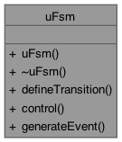
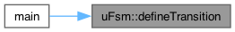

|
uFSM 1.0
IoT u-Micro Finite State Machine library
|
|
uFSM 1.0
IoT u-Micro Finite State Machine library
|
#include <uFsm.hpp>

Public Member Functions | |
| uFsm (uEventHandler *trans, uint32_t maxNumTransitions, uint32_t initialState) | |
| virtual | ~uFsm (void) |
| uint32_t | defineTransition (uint32_t sourceState, uint32_t destinationState, uint32_t event, uint32_t index) |
| bool | control (uint32_t event, void *parameters=NULL) |
| void | generateEvent (uint32_t event, void *parameters=NULL) |
| uFsm::uFsm | ( | uEventHandler * | trans, |
| uint32_t | maxNumTransitions, | ||
| uint32_t | initialState ) |
|
virtual |
| bool uFsm::control | ( | uint32_t | event, |
| void * | parameters = NULL ) |
Queue and process an event.
| event | event identifier. |
| parameters | optional event parameters owned by the caller. |
Definition at line 145 of file uFsm.cpp.
| uint32_t uFsm::defineTransition | ( | uint32_t | sourceState, |
| uint32_t | destinationState, | ||
| uint32_t | event, | ||
| uint32_t | index ) |
Define a state transition.
| sourceState | transition source state. |
| destinationState | transition destination state. |
| event | event that triggers the transition. |
| index | handler table index to call. |
Definition at line 127 of file uFsm.cpp.

| void uFsm::generateEvent | ( | uint32_t | event, |
| void * | parameters = NULL ) |